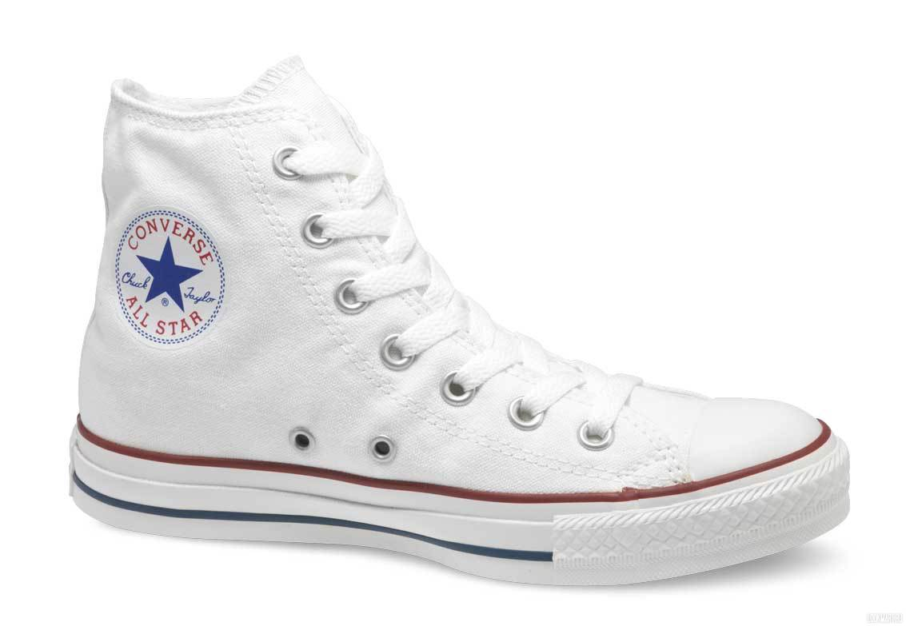
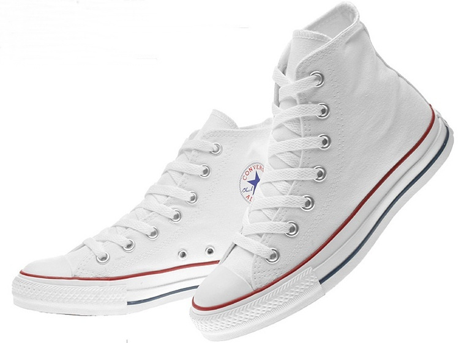

Converse: детальные изображения


Описание товара:
Баскетбольные кроссовки «Converse All star»
Характеристики товара:
- цвет: Синий, белый, серый, коричневый
- состав: Текстиль, резина
- пол: Мужское
- производство: Вьетнам
- Подобрать Размер
Подробное описание товара:
Модель полностью выполнена из материала Hyperfuse и поэтому она получилась очень лёгкой, прочной и дышащей. Уплотнённый материал в носовой части и фиксатор в области пятки предназначены для максимальной фиксации стопы и минимизации риска получения травм. Так же этому способствует липучка в центральной части. В передней части подошвы имеется баллон Zoom, дающий амортизацию и усиливающий чувство корта , что очень необходимо лёгким и быстрым игрокам. Подмётка подошвы имеет рисунок «ёлочка» на протяжении всей своей длины, что значительно улучшает сцепление с кортом.
Интересный факт*:
Важной вехой в истории компании считают 1917 год, этот год был началом выпуском Converse специальной обуви для баскетболистов — Converse All Star. Вскоре известный баскетболист Чарльз Х. «Чак» Тэйлор (англ. Charles H. «Chuck» Taylor) из команды «Akron Firestones» начинает играть исключительно в «конверсах». В 1918 году Тейлор получает от Converse поддержку и свою первую пару рекламных кед All Star. Официально Чак Тэйлор присоединился к Converse в 1921 году, а в 1923 All Stars стали его именной про-моделью после публикации ретроспективы в честь 60-летия баскетбола как вида спорта, а также преподавания первых уроков владения мячом в Государственном университете Северной Каролины. Затем Чак отправился в 35-летний рекламный тур, чтобы познакомить и научить Америку баскетболу, за что он получил прозвище «баскетбольный посол»..